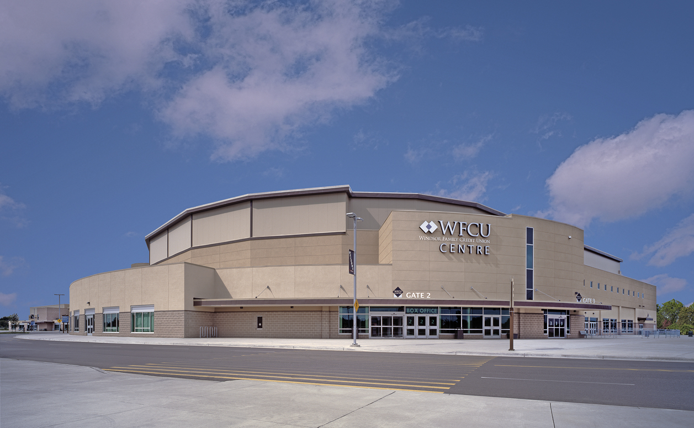

Address
8787 McHugh St, Windsor, Ontario N8S 0A1

Image Source: City of Windsor / Wikipedia (Public Domain)
About WFCU Centre
The WFCU Centre is Windsor’s premier sports and entertainment complex, serving as the home arena for the Ontario Hockey League’s Windsor Spitfires and hosting numerous concerts, community events, and conventions throughout the year.
Opened in 2008, this state-of-the-art facility features a main bowl with seating for over 6,500 spectators, as well as several community rinks, meeting spaces, and fitness areas. Beyond hockey, the WFCU Centre regularly welcomes big-name performers, trade shows, and charity events, making it a central hub for Windsor’s cultural and athletic life.
The venue also houses programs run by Windsor’s Parks and Recreation Department, promoting community engagement through sports and wellness. Conveniently located near Forest Glade, the WFCU Centre stands as a modern symbol of Windsor’s dedication to recreation, teamwork, and entertainment for all ages.